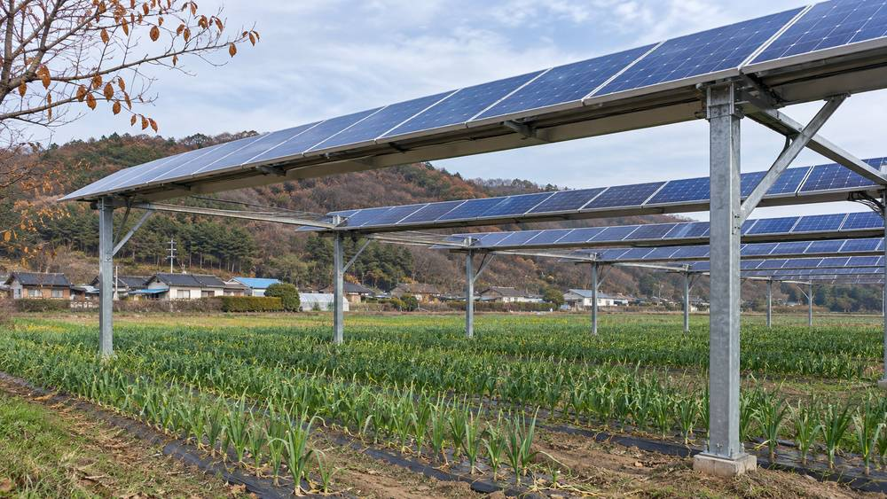

영농형 태양광 규모·작물 고시안, 11월 말 행정예고

시행령안은 시장·군수·구청장이 발전 용량 제한 가능…주민참여협동조합은 조합원 10명 이상
농림축산식품부가 영농형 태양광의 사업 규모와 재배작물 기준을 정하는 고시 제정안을 마련 중이며, 늦어도 11월 말까지 행정예고할 예정이다. 9월 16일 입법예고된 시행령 제정안은 제12조에서 시장·군수·구청장이 발전 용량 등 사업 규모를 제한할 수 있게 했지만, 공고문에 구체적인 용량 숫자는 없다.
시행령 제정안은 발전사업부지의 80% 이상에서 영농하도록 했다. 시행규칙 제정안은 설비의 차광률을 30% 미만, 구조물 최저 높이를 2.5m 이상으로 정했다(시설물이 차지하는 면적은 부지의 10% 이내다). 주민참여협동조합은 조합원이 10명 이상이어야 하고, 조합원은 발전설비가 있는 읍·면·동이나 연접한 읍·면·동에 1년 이상 살아야 한다. 이 조합과 재생에너지지구 안 농업법인은 에너지복지 지원, 공동영농활동 지원 같은 방식으로 발전 수익을 주민에게 돌려주는 계획을 세워야 한다.
「영농형 태양광 발전사업의 활성화 및 지원에 관한 법률」은 6월 16일 공포됐고 12월 17일 시행된다.
뉴스 바로 읽기
본지가 공개 자료와 본지 보도로 확인한 사실만 덧붙입니다
시행령·시행규칙 제정안은 농식품부 누리집 '국민소통-법령정보-입법·행정예고'에 게재됐고, 의견 접수는 9월 28일에 끝났다. 농식품부가 법제처와 입법예고 기간을 협의하며 낸 일정은 규제심사 10월 7일부터 11월 27일까지, 차관회의 12월 3일, 국무회의 12월 8일이다. 농식품부는 11월 6일 충북 청주에서 농업인·지방정부 담당자 등 220여 명이 참석한 '영농형태양광 상생 한마당'을 열었다. 이 자리에서 농식품부는 하위규정이 마련되면 표준 매뉴얼과 교육·홍보로 허가 절차와 필요 서류를 안내하겠다고 밝혔다.
출처: 한국농정신문 2026-11-12 한우준 원문 보기
출처: 농림축산식품부 2026-09-16 농림축산식품부공고 제2026-487호 영농형 태양광 발전사업의 활성화 및 지원에 관한 법률 시행령 제정안 입법예고 원문 보기
출처: 농림축산식품부 2026-09-11 시행규칙 제정안 규제영향분석서(입법예고 2026-09-16~2026-09-28) 원문 보기
출처: 법제처 2026-09-15 입법예고기간단축확인서(시행령안·시행규칙안) 원문 보기
출처: 농림축산식품부 2026-11-06 보도자료 '영농형태양광 상생한마당' 열려 원문 보기
営農型太陽光の規模・作物の告示案、11月末に行政予告
施行令案は発電容量の制限を市長・郡守・区庁長に認める…住民参加協同組合は組合員10人以上
韓国の農林畜産食品部（農食品部）が、営農型太陽光の事業規模と栽培作物の基準を定める告示制定案を準備しており、遅くとも11月末までに行政予告する予定だ。9月16日に立法予告された施行令制定案は、第12条で市長・郡守・区庁長が発電容量などの事業規模を制限できるとしたが、公告文に具体的な容量の数字はない。
施行令制定案は、発電事業用地の80%以上で営農するよう定めた。施行規則制定案は、設備の遮光率を30%未満、構造物の最低高さを2.5m以上とした（施設物が占める面積は用地の10%以内）。住民参加協同組合は組合員が10人以上で、組合員は発電設備がある邑・面・洞か隣接する邑・面・洞に1年以上住んでいなければならない。この組合と再生可能エネルギー地区内の農業法人は、エネルギー福祉支援や共同営農活動の支援などの方法で発電収益を住民に還元する計画を立てなければならない。
「営農型太陽光発電事業の活性化及び支援に関する法律」は6月16日に公布され、12月17日に施行される。
ニュースをすぐ読む 施行令・施行規則の制定案は農食品部のホームページ「国民疎通－法令情報－立法・行政予告」に掲載され、意見の受け付けは9月28日に終わった。農食品部が法制処と立法予告期間を協議する中で示した日程は、規制審査が10月7日から11月27日まで、次官会議が12月3日、国務会議が12月8日だ。農食品部は11月6日、忠清北道・清州で農業者や地方政府の担当者ら220人余りが参加した「営農型太陽光 相生マダン」を開いた。この場で農食品部は、下位規定が整えば標準マニュアルと教育・広報で、許可手続きと必要書類を案内すると述べた。
出典: 한국농정신문 2026-11-12 한우준 原文を読む
农光互补规模与作物告示案，11月底预告
施行令草案允许市长、郡守、区厅长限制发电容量…居民参与合作社须有10名以上社员
韩国农林畜产食品部正在起草规定农光互补项目规模和种植作物标准的告示制定案，预计最晚11月底进行行政预告。9月16日立法预告的施行令制定案在第12条中规定，市长、郡守、区厅长可以限制发电容量等项目规模，但公告文中没有具体的容量数字。
施行令制定案规定，发电项目用地的80%以上须进行耕种。施行规则制定案将设备遮光率定为低于30%，结构物最低高度定为2.5米以上（设施占用面积在用地的10%以内）。居民参与合作社的社员须在10人以上，社员须在发电设备所在的邑·面·洞或相邻的邑·面·洞居住1年以上。该合作社和可再生能源区内的农业法人，须制定以能源福利支援、共同耕作活动支援等方式向居民返还发电收益的计划。
《农光互补发电事业活性化及支援相关法律》于6月16日公布，12月17日施行。
新闻速读 施行令、施行规则制定案已刊登在农食品部网站“国民沟通—法令信息—立法·行政预告”栏目，意见征集于9月28日结束。农食品部在与法制处协商立法预告期间时提出的日程是：规制审查从10月7日至11月27日，次官会议12月3日，国务会议12月8日。农食品部11月6日在忠清北道清州举办了有农业人员和地方政府负责人等220多人参加的“农光互补共赢一堂会”。农食品部在会上表示，下位规定出台后，将通过标准手册和教育、宣传介绍许可程序和所需材料。
来源: 한국농정신문 2026-11-12 한우준 查看原文
Korea's agrivoltaics scale and crop notice due for pre-announcement in late November
Draft decree lets city, county and district heads limit generating capacity; resident co-ops need 10 or more members
South Korea's Ministry of Agriculture, Food and Rural Affairs is preparing a draft notice that sets business scale and cultivation-crop standards for agrivoltaics, and plans to put it out for administrative pre-announcement by the end of November at the latest. The draft enforcement decree, pre-announced on Sept. 16, lets city, county and district heads limit business scale, including generating capacity, in Article 12, but the public notice gives no specific capacity figure.
The draft decree requires farming on at least 80% of the generation site. The draft enforcement rule sets shading below 30% and a minimum structure height of 2.5m or more (facilities may occupy up to 10% of the site). A resident-participation cooperative must have at least 10 members, and members must have lived for a year or more in the township or neighbourhood where the plant is located or an adjoining one. That cooperative and farm corporations inside renewable-energy districts must draw up plans to return generation profits to residents through measures such as energy-welfare support and support for joint farming.
The Act on the Promotion and Support of Agrivoltaic Power Generation was promulgated on June 16 and takes effect on Dec. 17.
Reading the News The draft decree and rule are posted on the ministry's website under "Public Communication - Legal Information - Legislative and Administrative Notices", and the comment period closed on Sept. 28. The schedule the ministry gave while agreeing the notice period with the Ministry of Government Legislation is regulatory review from Oct. 7 to Nov. 27, a vice-ministers' meeting on Dec. 3 and a Cabinet meeting on Dec. 8. On Nov. 6 the ministry held a "Agrivoltaics Win-Win Forum" in Cheongju, North Chungcheong, with more than 220 farmers and local-government officials. There the ministry said that once the lower-level rules are in place, it will explain permit procedures and required documents through a standard manual, training and publicity.
Source: 한국농정신문 2026-11-12 한우준 Read the original